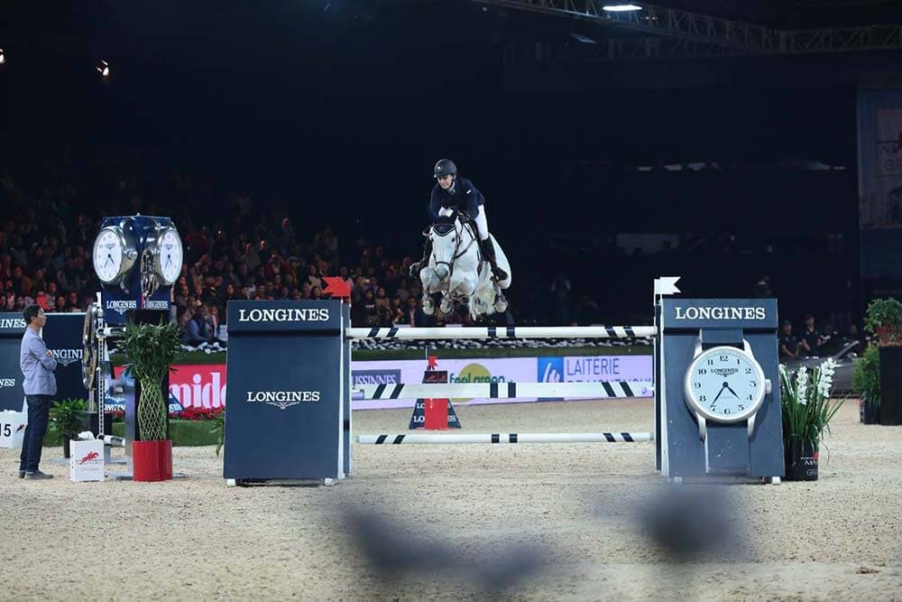

室内与室外：浪琴表香港马术大师赛是一场在亚洲国际博览馆举行的室内马术障碍赛。而室内与室外赛事对于骑手与马匹的挑战是截然不同的。在室内场地中，一些容易分散骑手与马匹注意力的典型因素被明显放大，比如讲话的声音，兴奋的观众以及明亮的光线。它们将使骑手与马匹更难以集中精神。
场地设计：浪琴表香港马术大师赛的赛场由比利时场地设计师Luc Musette设计。马术赛场的设计往往凝聚巧思，并与比赛难度息息相关。国际马术联合会（FEI）通过星级来评定赛事难度，由一星到五星，分别象征着比赛难度的依次升高。全部三站马术大师赛室内大满贯赛事，包括浪琴表香港马术大师赛在内，均位列国际五星级马术场地障碍赛，为骑手与马匹呈现极致挑战。
体力与精力：在浪琴表香港马术大师赛期间举行的浪琴表大奖赛，设置有1.6米至2米多高的障碍，这对于世界最顶尖的骑手来说也绝非易事。顶尖的骑手与马匹常年奔波于世界各地，面临着长途飞行、跨越时区、环境变化等诸多挑战，但他们仍须以巅峰状态来应对挑战。因此，观众会目睹马匹状态的波折起伏，马匹“拒跳”的情况也偶有发生。
多重障碍：马匹需要在跑动中连续跳跃两到三个障碍物组成的多重障碍。骑手和马匹需要准确计算奔跑与跳跃的距离，任何误差都将导致撞杆或拒跳。 合作：骑手与马匹的默契配合构成了马术障碍赛这一独一无二的运动。浪琴表香港马术大师赛汇聚了世界上最顶尖的骑手与马匹的组合。对于骑手而言，在历经紧张的赛程以及来自欧洲等遥远国度的长途旅行后，至关重要的是了解马匹的状态。他们不仅要知晓马匹的临场表现，更要在控制马匹时把握一张一弛的准确时机。
速度与精准：浪琴表速度挑战赛以及浪琴表大奖赛的争时赛环节见证了许多最引人入胜的时刻。在这些赛事中，出场骑手需要战胜由前几轮选手造成的压力，力争在最短时间内完成比赛。为了超越之前的选手，出场骑手展现出紧凑的转向，全速的驰骋，以及非凡的创造力。比赛的难度在于速度与精准的平衡，过快的速度将导致失误。比如，在浪琴表大奖赛的争时赛环节，从第四个障碍到第五个障碍的紧急转向便让不少骑手撞杆落地。 男女骑手对阵：马术障碍赛也是极少数男女同场竞技的体育赛事之一。男女骑手在赛场中一决胜负，参赛马匹也是巾帼不让须眉。浪琴表大奖赛的前三名包括由英国骑手约翰·惠特克（John Whitaker）策骑的公马“Argento”，瑞典骑手亨里克·冯·艾克曼（Henrik von Eckermann）驾驭的母马“Gotha FRH”以及由法国骑手西蒙·德莱斯特（Simon Delestre）策骑的骟马“Ryan des Hayettes”。
颜色：颜色的使用也能对马匹造成特定的影响，比如引发错觉。深浅不一的颜色组合或是纯色的使用会影响马匹观察障碍的方式。有些障碍看起来会更加稳固，而另一些则更为轻薄，这些对于障碍的认知将影响马匹跨越它们的动作。
障碍设计：障碍的外型与设计也会影响赛马的表现。外型奇特的障碍会令马匹觉得不自然，并使部分马匹受到惊吓。参赛马匹各有不同，有些赛马相对更容易分心，尤其是那些更为年轻的仍在训练之中的赛马。 障碍栏杆与挡板：骑手跨越障碍的方式也取决于马术障碍的类型。举例而言，障碍栏杆的杯托比障碍挡板的杯托更为凹陷一些。马匹如果不注意紧收前腿，或者在落地时不用力伸展后腿，会更容易将障碍栏杆撞落。